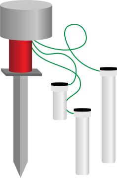
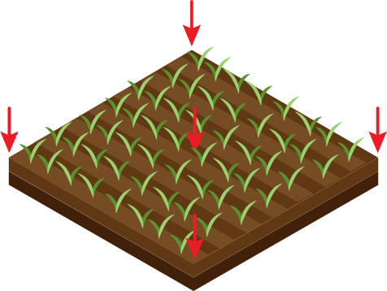

<div class="modal fade" id="placeSensor" data-bs-backdrop="static" data-bs-keyboard="false" tabindex="-1" aria-labelledby="staticBackdropLabel" aria-hidden="true">
    <div class="modal-dialog">
      <div class="modal-content">         
        <button type="button" class="btn-close position-absolute top-0 end-0 p-2" data-bs-dismiss="modal" aria-label="Close"></button>
        <div class="modal-header">
          <h5 class="modal-title mx-auto" id="staticBackdropLabel">Place sensors on <span class="red">F1</span></h5>
        </div>
        <div class="modal-body">
          <div class="container d-flex">
              
              
              
            </div>
        </div>
        <div class="modal-footer">
          <button type="button" class="btn btn-primary mx-auto" data-bs-dismiss="modal">OK</button>
        </div>
      </div>
    </div>
  </div>